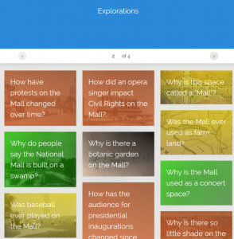
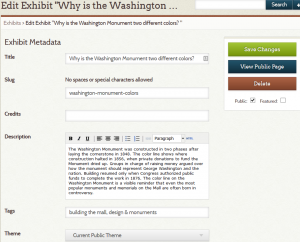
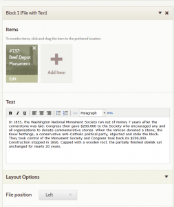
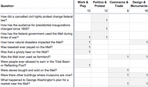

One of our major project goals was to pique interest of users through the hook of an inquiry question. These questions became the Explorations section.
{kind=link}

We crafted leading questions to draw the attention of tourists to issues they may not have thought to inquire about without prompts from interpretative signage on the Mall. We varied the themes and time periods covered, as well as the question structure to appeal to different users. Like the game show Jeopardy, the content team often started with an answer, or an episode we wanted to expose, and then struggled to come up with a well-phrased question. Each question added a layer of historical interpretation to primary sources by raising provocative issues relating to the Mall’s development as a place of commerce and trade, politics and protest, work and play, and of remembrance, as well as its changing design. Some examples include: How have protests on the Mall changed over time? ; Why is this space called a “Mall?”; Why did Congress almost leave Washington in 1814?; Were slaves bought and sold on the Mall?; Were people ever allowed to swim in the Tidal Basin?; Why is the Washington monument two different colors? Each question was then answered with five primary sources. Each primary source was added as an Omeka item.
The content team crafted questions in project meetings, and then also consulted with GMU history faculty who served as advisers for the projects. Some questions formed from discussions we had in our team meetings, particularly when we did not know the answer ourselves, such as was the Mall ever segregated? Once we agreed on questions, or a specific topic to be explored, one team member took the lead on researching and composing a draft of the answer and selecting at least five possible primary sources. Each source addressed one piece of the answer, and sometimes offered conflicting interpretations of an event. By offering multiple primary sources, we wanted to demonstrate that most historical questions do not have simple answers.
{kind=link}

To construct the Explorations in Omeka, we built one-page exhibits using the Exhibit Builder plugin. We titled each Exploration (exhibit) with the question, and provided a 100-word summary answer in the exhibit description field. Then, we created a page containing five content blocks. Each block consisted of an item that was interpreted within the context of the specific question. When creating the primary source items, we described them first as unique sources using the Dublin Core and item type metadata fields.
{kind=link}

After adding the item to a content block for answering an Exploration, the team then interpreted the source within the context of the question. Some sources were used in more than one Exploration, and interpreted differently each time, while the item’s core descriptive data remained the same.
To let users browse Explorations by a theme, we added tags to each exhibit. Work and play, commerce and trade, designs and memorials, politics and protest made those themes visible. One of the more popular tags, “ghost mall,” signifies content related to sites that no longer exist on the Mall.
{kind=link}

In order to ensure breadth of coverage of themes and time periods, the Project Manager created a spreadsheet of Explorations. She tracked an Exploration’s major themes, expressed as tags, and the time periods covered (defined by 30 years spans). Each row represented one Exploration, with columns for the themes and eras. Using the numeral 1, she marked the theme(s) and time period for each exploration. The table’s second row calculated the sum of each column, allowing us to quickly gauge where we needed more coverage.
The content team also wanted to offer Explorations crafted specifically for family or school groups to do together. “Scavenger Hunts” are Explorations that invite users to visit one specific landmark on the Mall to engage in an exercise of close looking. Read more about the development of the Scavenger Hunts from Michael O’Malley.
To keep the section from becoming static, the order of Explorations were randomized so that each one rotates through on the browse pages. One Exploration is featured on the homepage, and those rotate as well. This means that if a user visits the landing page early in the day for a quick browse, when she returns later in the afternoon, she will discover a different featured Exploration on the homepage, and on the section’s landing page.